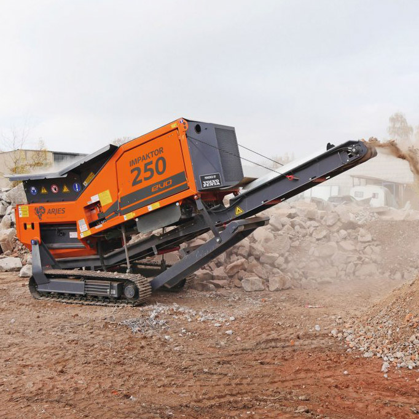

<div class="dots-container">
    <div class="oferta-body">

        <app-title-block [title]="'Marka Arjes w BAX'"></app-title-block>
    
        <div class="oferta-main-text" [ngClass]="cssMainTextCols">
            <h3>Rozdrabniacze niemieckiej firmy <strong>ARJES</strong> to specjalnie zaprojektowane urzadzenia do rozdrobnienia każdego
                rodzaju materiału. Dzięki opatentowanej technologii z powodzeniem radzą sobie min. z: podkładami kolejowymi, stalą, karoseriami samochodowymi, silnikami, chłodnicami, zmieszanymi odpadami komunalnymi, drewnem, korzeniami, gruzem, asfaltem, materacami, meblami, dywanami, odpadami zielonymi, oponami i wielu innymi odpadami.
            </h3>
        </div>
        <div class="oferta-pics-container arjes-transparent-gradient arjes-border">
            
            
        </div>

        <div class="oferta-color-divider arjes-gradient"></div>
        
        <app-title-block [title]="'Przedstawiciel handlowy'"></app-title-block>

        <div class="oferta-card-container">
            <app-card-person *ngFor="let contact of contactCards" [contactInfo]="contact" class="oferta-card-contact"></app-card-person>
        </div>

      


    </div>
</div>